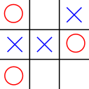
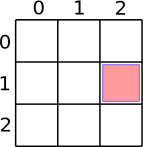
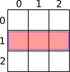
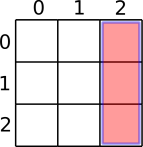

Taules
A Java podem definir un array de diferents tipus de dades.
Per exemple:
1char[] vocalsLlatines = {'a', 'e', 'i', 'o', 'u' };
2String[] colors = { "vermell", "groc", "verd" };
3int[] notesCurs = {10, 9, 8, 9, 9, 10, 10};
Podríem definir un array d'arrays? La resposta és sí.
El tres en ratlla
Considera el joc del tres en ratlla (tic tac toe)
Aquest conegut joc està composat per una matriu o taula de 3 x 3 en la que dos jugadors hi posen les seves marques (típicament ㄨ i 〇) per torns, amb l'objectiu d'aconseguir tres seguides ocupant una fila, una columna o una diagonal.
Si no has jugat mai, troba alguna persona o aplicació amb qui fer una partida.
Representació del tres en ratlla
En programació hi ha un concepte anomenat representació o modelització de les dades que consisteix en seleccionar els elements de la realitat que ens interessen pel nostre programa i convertir-los en quelcom que pugui ser programable.
Fins ara, la representació de les dades ha resultat més o menys fàcil ja que sovint ha consistit en manipular nombres i texts, que ja tenen un tipus associat (enter, string, etc.)
D'entre les poques excepcions, una d'interessant va ser la representació que varem fer per l'exerecici de l'ascensor pel que varem representar plantes i botons com a strings o, fins i tot, com enters!
Com podríem representar un tres en ratlla?
Comencem per analitzar els components del joc. Tenim el taulell on es coŀloquen les marques i les marques en si.
Comencem per les marques dels jugadors. En total hem de ser capaços de representar tres valors possibles: ㄨ, 〇 i cap marca.
Una possibilitat seria fer servir caràcters, en concret X, O i
·. Ens sobren molts caràcters possibles que no formarien part de la
representació.
A continuació, considerem el taulell. Abans de res, intentem analitzar amb més detall en què consisteix el taulell. Es tracta d'una graella o taula de 3X3 posicions. En total 3 files i 3 columnes. Podem numerar les files i les columnes començant pel cero (som developers o no som developers?)
Així, per referir-nos a una posició concreta, podem indicar el número de fila i el de columna corresponent. Per exemple, la fila 1 columna 2 estaria referint-se a la casella ressaltada:
Com podem programar aquesta taula en Java?
Una possibilitat fent servir el que ja coneixem és definir un array de caràcters per cadascuna de les tres files:
1char[] fila0 = new char[3];
2char[] fila1 = new char[3];
3char[] fila2 = new char[3];
Així, si volem indicar que el jugador ㄨ hi posa la seva marca a la fila 1 columna 2, ho faríem amb:
fila1[2] = 'X';

{kind=link}
{kind=link}
{kind=link}
Una representació millor
Si bé la representació del tres en ratlla anterior pot funcionar, no resulta del tot satisfactòria, especialment si considerem fer ampliacions com ara un quatre en ratlla o un mil en ratlla. T'imagines haver de declarar una variable per cada fila?
Aquest és un problema que ja hem resolt abans, no? El que necessitem és un array de files o, si vols, un array d'arrays!
En Java ho declarem així:
char[][] taulell; // files x columnes
Fixa't que és quelcom coherent:
de quin tipus és cada caseŀla?
charde quin tipus és cada fila? array de
charochar[]de quin tipus és el taulell? array de files, o array de
char[], ochar[][]
Recorda que de moment no s'ha reservat espai per cap caràcter.
Per aconseguir aquest espai, podem inicialitzar taulell de la següent
manera:
taulell = new char[3][3];
Ara sí! Un cop inicialitzat taulell, estarà apuntant a una posició de
memòria que disposa de 3 x 3 caràcters.
Una casella
Per a accedir a una posició concreta d'aquest taulell, ho fem amb una
notació molt similar a la que fèiem amb arrays. Per exemple, la fila 1
columna 2 s'indicaria amb taulell[1][2].
Així, podem assignar i consultar el valor d'aquesta posició:
1taulell[1][2] = 'X';
2System.out.printf("La casella [%d, %d] està marcada com '%c'%n", 1, 2, taulell[1][2]);
3// → La casella [1, 2] està marcada com 'X'
Perquè sabem que és taulell[1][2] i no taulell[2][1]? Doncs
únicament perquè ho diu el comentari amb el que varem declarar
taulell:
char[][] taulell; // files x columnes
Perfectament ho podríem haver representat a l'inrevés, és a dir, primer les columnes i després les files. Per aquesta raó, és molt important assegurar-nos que incloem un comentari en les declaracions de taules que indiquin clarament què vol dir la fila i què la columna.
Quin valor tindrà la posició taulell[1][2] tot seguit d'haver
inicialitzat taulell? La resposta és
el caràcter 0. Java està inicialitzant per nosaltres els valors de cada
posició dins de la taula. En concret, li posa un valor base que resulta
en 0 per la majoria dels primitius (false en cas de boolean) o bé
un valor, de moment misteriós, anomenat null pels tipus no primitius
com ara els Strings.
És a dir, en inicialitzar la taula, la següent expressió és certa:
taulell[1][1] == 0
Tota una fila
Com quan disposàvem d'una variable per cada fila, encara podem fer una expressió que es refereixi a tota una fila del taulell:
{kind=link}
El tipus de l'expressió taulell[1] és char[] (un array de
caràcters) que està inicialitzat a 3 caràcters! De fet, és perfectament
vàlid fer la següent assignació:
taulell[1] = new char[3];
Podem indicar que tota la fila 1 està buida (sense peces) fent el següent codi:
for (int columna = 0; columna < 3; columna++) {
taulell[1][columna] = '·';
}
És a dir, per la fila 1 anem passant de columna en columna i assignant-li el puntet que marca la casella buida.
Tota una columna
{kind=link}
A diferència del que podíem fer amb les files, no podrem expressar la columna 2 amb una expressió.
Sí podem, però, recórrer totes les ceŀles de la columna:
1for (int fila = 0; fila < 3; fila ++) {
2 taulell[fila][2] = '·';
3}
És a dir, anem passant per totes les files mantenint fix el valor de la columna.
Tot el taulell
Què passaria si el que volem és inicialitzar tot el taulell com buit? Doncs haurem de recòrrer totes les columnes de cada fila:
1for (int fila = 0; fila < 3; fila++) {
2 for (int columna = 0; columna < 3; columna++) {
3 taulell[fila][columna] = '·';
4 }
5}
I si volem mostrar el taulell?
1for (int fila = 0; fila < 3; fila++) {
2 for (int columna = 0; columna < 3; columna ++) {
3 System.out.print(taulell[fila][columna]);
4 }
5 System.out.println();
6}
Per descomptat, amb tot el taulell buit, ens mostrarà un quadrat de punts:
···
···
···
Si bé no queda tan maco en mode text, aquesta representació ens permet continuar treballant amb la sortida estàndard de Java.
Varietat en els arrays d'arrays
El nostre taulell de tres en ratlla és força còmode doncs tenim el mateix nombre de files que de columnes.
El món no sempre resulta tan fàcil, i hi podem trobar moltes variacions. Veiem algunes.
Quan el nombre de files i de columnes són diferents
Per exemple, considera una estructura que hagi de guardar les notes d'una assignatura per cadascun dels estudiants. Suposem que tenim 30 alumnes i 6 notes, i que les notes són valors enters. La declaració vindria a ser:
int[][] notes = new int[30][6]; // alumne x nota
Quan el nombre de columnes és diferent entre files
Per exemple, considera una estructura que guardi els noms dels fills dels diferents empleats de la companyia. Suposem que la companyia pot tenir fins a 100 empleats, i l'empleat 5 en té 3, l'empleada 12 cap i l'empleada 21 en té un.
Un programa que mostrés aquestes dades, podria tenir aquesta sortida:
$ java Fills
Empleat 5 té Daphne, Velma i Fred
Empleat 12 no en té
Empleat 21 té Shaggy
El programa podria ser implementat de la següent manera:
1public class Fills {
2 public static void main(String[] args){
3 String[][] fillsEmpleats= new String[100][]; // empleats x fills
4 fillsEmpleats[5] = new String[] {"Daphne", "Velma", "Fred"};
5 fillsEmpleats[12] = new String[] {};
6 fillsEmpleats[21] = new String[] {"Shaggy"};
7
8 for (int empleat = 0; empleat < fillsEmpleats.length; empleat++) {
9 if (null == fillsEmpleats[empleat]) continue;
10 System.out.print("Empleat " + empleat + " ");
11 String[] fillsEmpleat = fillsEmpleats[empleat];
12 if (fillsEmpleat.length == 0) {
13 System.out.println("no en té");
14 continue;
15 }
16 System.out.print("té " + fillsEmpleat[0]);
17 for (int fill = 1; fill < fillsEmpleat.length -1; fill++) {
18 System.out.print(", " + fillsEmpleat[fill]);
19 }
20 if (fillsEmpleat.length > 1) {
21 System.out.print(" i " + fillsEmpleat[fillsEmpleat.length - 1]);
22 }
23 System.out.println();
24 }
25 }
26}
Quan hi ha més de dues dimensions
Hem vist que podem voler guardar les notes de tots els alumnes d'un curs. Què passaria si ens cal guardar les notes de tots els alumnes de diferents cursos?
Doncs afegim més dimensions i ja està.
Per exemple, suposa que tenim 10 cursos amb un màxim de 30 alumnes per curs, 6 notes per alumne.
La declaració podria ser:
int[][][] notes = new int[10][30][6]; // any x alumne x nota
Per saber la nota nr. 3 de l'alumne nr 22 del curs nr 5 faríem:
int nota = notes[5][22][3];
I per recórrer tots els valors faríem:
1for (int curs=0; curs < notes.length; curs++) {
2 for (int alumne=0; alumne < notes[curs].length; alumne++) {
3 for (int nota=0; nota < notes[curs][alumne].length; nota++) {
4 System.out.println(notes[curs][alumne][nota]);
5 }
6 }
7}
Evidentment, podem posar totes les dimensions que ens calguin.